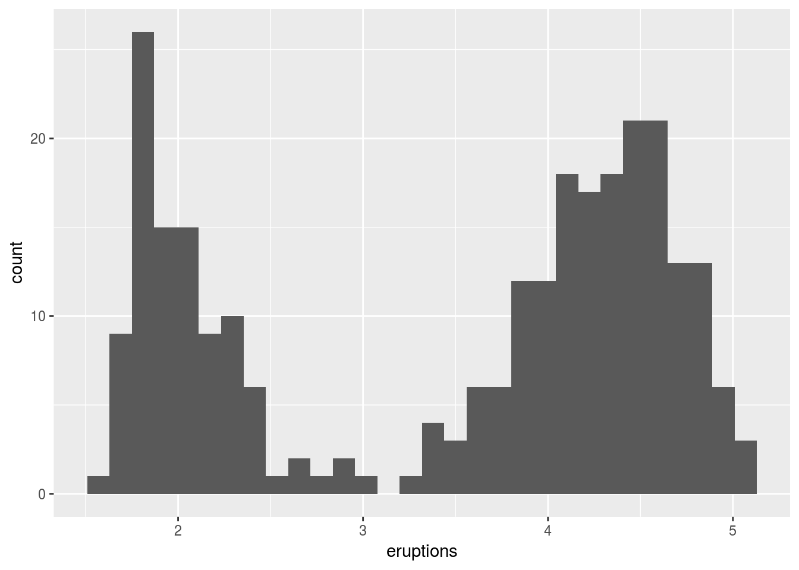
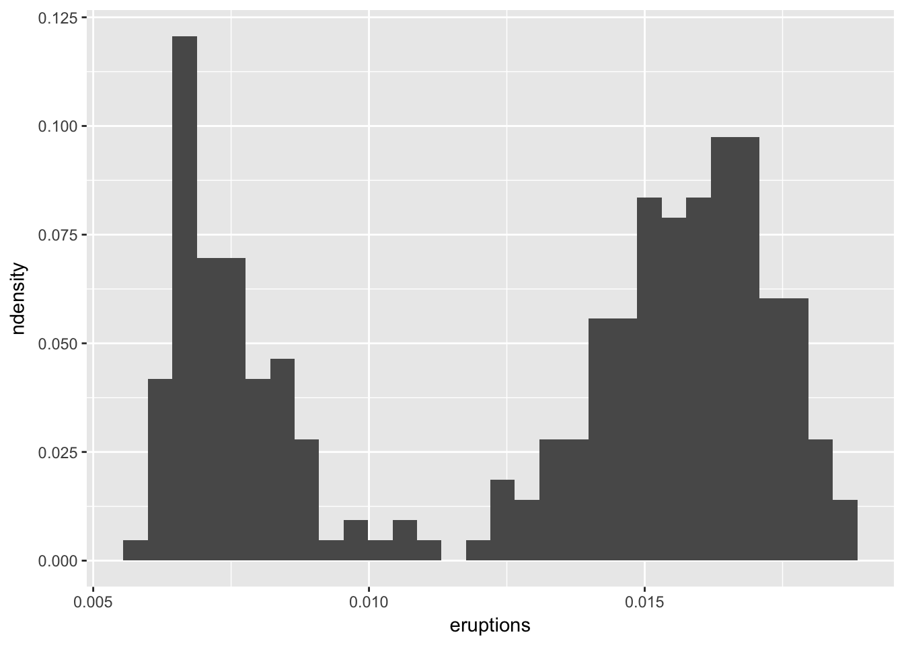

Graphical data displays
library(tidyverse)
library(ggpubr)
Frequency distributions
Qualitative data
Frequency distribution
This kind of graph applies to categorical data. Although it can also be presented numerically in tabular form, one may also create a bar or pie graph of the number of occurences in a collection of non-overlapping classes or categories. Both approaches will be demonstrated here.
Relative frequency distributions
This is similar to the frequency distribution of qualitative data, except that now we show the frequency proportion in a collection of non-overlapping categories. An example:
We have a sample size of 12 ($n=12$). In this sample, two are coloured blue, six red, and five purple. The relative proportions are $2/12=0.1666667$ blue, $6/12=0.5$ red, and $5/12=0.4166667$ purple. The important thing to note here is that the relative proportions sum to 1, i.e. $0.1666667+0.5+0.4166667=1$. These data may be presented as a table or as a graph.
Continuous data
Frequency distribution (histograms)
ggplot(data = faithful, aes(x = eruptions)) +
geom_histogram()

Relative frequency distributions
faithful %>%
mutate(eruptions = eruptions / length(eruptions)) %>%
ggplot(aes(x = eruptions)) +
geom_histogram(aes(y = ..ndensity..))

# ggplot(data = faithful, aes(x = eruptions)) +
# geom_density(fill = "salmon", aes(y = ..density..)) +
# scale_x_continuous(expand = c(0, 0)) +
# scale_y_continuous(expand = c(0, 0))
Cumulative frequency distributions
Cumulative relative frequency distributions
Scatter plots
Relationship between two (matched) continuous variables.
Box plots
Box plots are sometimes called box-and-whisker plots. These graphs are a a graphical representation of the data based on its quartiles as well as its smallest and largest values. The keen eye can glance the ‘shape’ of the data distribution.